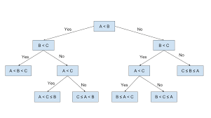
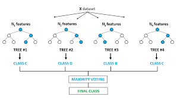
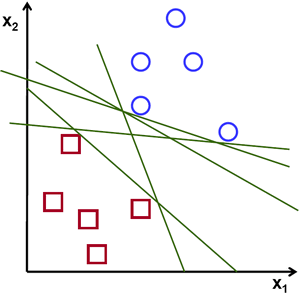
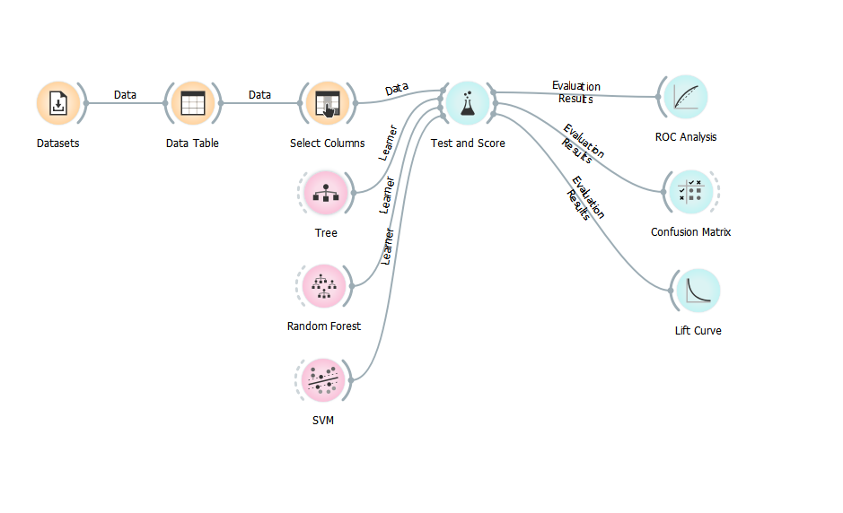
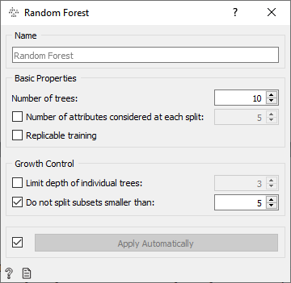
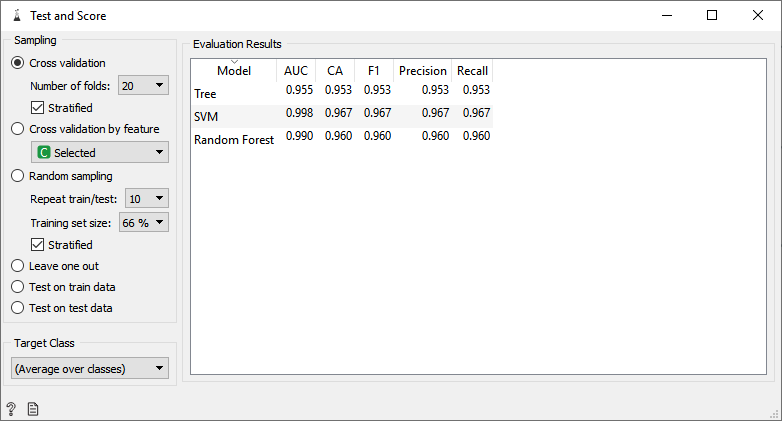
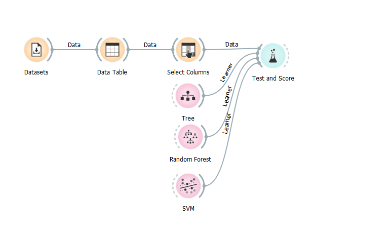
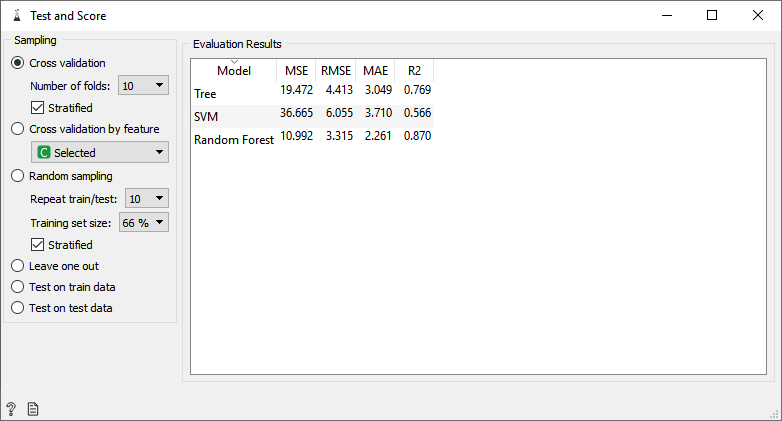

Стабла одлучивања, метод случајних шума и метод потпорних вектора
Стабла одлучивања (Decision Tree) представљају модел који се веома често користи у машинском учењу. То је једна од најједноставнијих, а ипак најкориснијих структура машинског учења са веома широком применом. Генерално, стабла одлучивања се граде путем алгоритамског приступа који идентификује начине поделе скупа података на основу различитих услова. Стабла одлучивања су метод који се користи код надгледаног учења и који се примењује и за задатке класификације као и код регресије. Циљ је креирати модел који предвиђа вредност циљне променљиве учењем једноставних правила одлучивања изведених из скупа за тренирање. Модел доносо одлуке на основу вредности атрибута, почев од најинформативнијих ка оним мање информативним. Велика предност овог модела огледа се у његовој интерпретабилности. Другим речима, у сваком тренутку је јасно на основу чега је модел донео неку одлуку. Ово својство интерпретабилности јако је важно код осетљивих проблема као што је рецимо медицинска дијагностика, када је лекарима потребно објашњење зашто је модел донео одређене одлуке.
Стабло одлучивања класификује сваку нову инстанцу шетајући је кроз тестове од корена ка листовима стабла. У сваком чвору стабла налази се по један тест, који има два или више исхода. Сваком исходу одговара по једна грана стабла, и она води до следећег чвора. Листови су означени вредностима које представљају предвиђања стабла (ознакама класе у случају класификације или нумеричким вредностима у случају регресије). Свака инстанца из скупа података, у зависности од исхода, креће се од корена, кроз одговарајуће чворове, све док не стигне до листа који представља конкретно предвиђање. Илустрација стабла одлучивања за проблем бинарне класификације дата је на слици.

Метод случајних шума (Random Forest) представља метод машинског учења који се користи код проблема надгледаног учења и како за класификацију тако и за регресију. Као што знамо да је шума сачињена од дрвећа тако је и метод случајних шума састављен од већег броја метода стабла одлучивања. Метод случајних шума тестира стабла одлучивања на различитим подскуповима скупа података, а затим добија предвиђање од сваког од њих и на крају бира најбоље решење агрегацијом добијених предвиђања. Агрегирање у случају класификације може се дефинисати као избор најфреквентније класе, док се у случају регресије агрегација може дефинисати упросечавањем добијених нумеричких вредности. То је метода ансамбла (ансамбл се састоји од свих натрениранх стабала одлучивања) која је боља од једног стабла одлучивања јер смањује преприлагођавање (overfitting) обучавањем већег броја класификатора. Већи број стабала у шуми доводи до робуснијег метода машинског учења који обично има мању грешку него једноставнија стабла. Важно је напоменути да се агрегирањем већег броја стабала у некој мери губи на интерпретабилности коју она нуде.
Илустрација случајне шуме са четири стабла одлучивања дата је на слици испод.

Mетод потпорних вектора (Support Vector Machines – SVM) је важан метод надгледаног учења који има за циљ да пронађе хиперраван у n-димензионалном простору (n - број атрибута, карактеристика) који јасно разврстава тачке података. Оптимална хиперраван је подједнако удаљена од најближих инстанци сваке класе. Овај модел се може користити и за регресију и за класификацију, али се више користи у проблемима класификације. У наставку ћемо дискутовати најједноставнији случај бинарне класификације.
Димензија хиперравни зависи од броја атрибута. Ако је димензија улазних података n (ово одговара броју атрибута сваке појединачне инстанце), хиперраван ће јасно бити димензије n-1; Ако имамо дводимензионале улазне податке (рецимо тачке у еуклидској равни), тада је хиперраван линија; Ако је су улазни подаци тродимензионални (као пример могу послужити тачке у тродимензионом простору), тада хиперраван постаје дводимензионална раван. Хиперраван постаје тешко замислити када број улазних трибута пређе 5.
Потпорни вектори су инстанце података које су најближе хиперравни и утичу на положај и оријентацију хиперравни. Брисањем или додавањем потпорних вектора промениће се положај хиперравни. Ово су тачке које помажу у изградњи хиперравни. Интуитивно замишљамо их као држаче који дају потпору и истовремено фиксирају раздвајајућу хиперраван.
Предност метода потпорних вектора је та што након тренинга, и избора саме раздвајајуће хиперравни можемо одбацити све податке осим потпорних вектора, што пак позитивно утиче на временску и просторну сложеност примене самог алгоритма. Илустрација могућих раздвајајућих хиперравни у случају дводимензионог скупа података дата је на слици. Јасно, идеалана раздвајајућа хиперраван била би она која је на највећем растојању од најближе тачке података за тренинг. Тачке класификујемо у зависности од тога где се налазе у одоносу на раздвајајућу хиперраван.

Ради илустрације, применићемо наведена три модела на проблем регресије и проблем класификације.
Посматрајмо најпре проблем класификације података на скупу Iris. На овај скуп података применимо све три наведене методе, уз алгоритме за евалуацију – матрица конфузије, ROC крива и лифт кива, као на слици, да бисмо на конкретном примеру увидели која је метода најпогоднија за решавање овог проблема.

Када је реч о методу случајних шума, број стабала одлучивања може се мењати, у прозору који се отвара кликом на оператор Random forest, у пољу Number of trees. У овом прозору могуће је подешавање и неких напреднијих параметара, о којима неће бити речи.

Кликом на оператор Test and Score добијамо информације о оцени ова три модела. У колони CA (Classification Accurancy) можемо видети тачност класификације, односно удео тачно класификованих инстанци за дат скуп података, за ове три методе на основу резултата сва три модела евалуације. Дакле, прецизност методе дрво одлучивања је 0.953 (95.3%), прецизност методе потпорних вектора је 0.967 (96.7%), а прецизност методе случајних шума је 0.960 (96.0%). Одавде можемо закључити да за проблем класификације скупа података Iris најпрецизније резултате даје метода потпорних вектора, затим метода случајних шума, а најмању прецизност даје метода стабла одлучивања. Додатно, примећујемо повећање прецизности од гозово 1% које доноси агрегирање дрвета одлучивања у ансамбл.

Применимо исти поступак на скуп проблем регресије скупа података Housing.

Кликом на оператор Test and Score добијамо информације о оцени ова три модела. Видимо да је средњеквадратна грешка најмања код случајних шума, што значи да је овај модел најпогоднији за решавање задатог проблема, док метода потпорних вектора даје највећу грешку при обучавању на овом скупу података. На овом месту важно је истаћи позитивне ефекте агрегирања стабала одлучивања у случајну шуму на основу повећања површине испод ROC криве.
